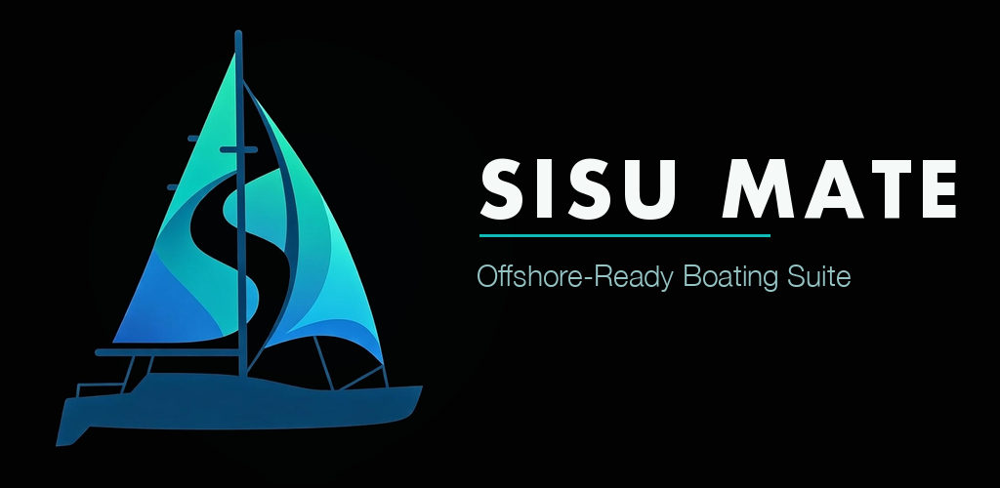

Your boat's offline first mate: checklists, provisioning, weather, crew games.
Sisu Mate is the offline-first companion for sailors, charterers, and anyone who runs a boat — checklists, maintenance, provisioning, and crew, all working with zero signal and syncing the moment you're back online.
No connection at anchor or mid-passage? Sisu Mate doesn't care. Every module runs on a local database on your phone — nothing waits on a cell tower.
Browse and import checklist templates shared by other sailors, with ratings — no need to build your maintenance schedule from scratch.
Nine games for when you're anchored or waiting out weather: Yatzy, Liar's Dice, Dudo, Checkers, Backgammon, Cribbage, Uno, Poker, and Solitaire. Eight support local LAN multiplayer over the same Wi-Fi — no internet needed — with AI opponents ready to fill an empty seat, and full single-player modes throughout.
Your boat's data lives on your device first. Pro accounts add realtime multi-device sync and crew sharing via the cloud, but the app never depends on it — log a repair, check off a safety item, or update the shopping list from the middle of an ocean, and it's there when the signal comes back.